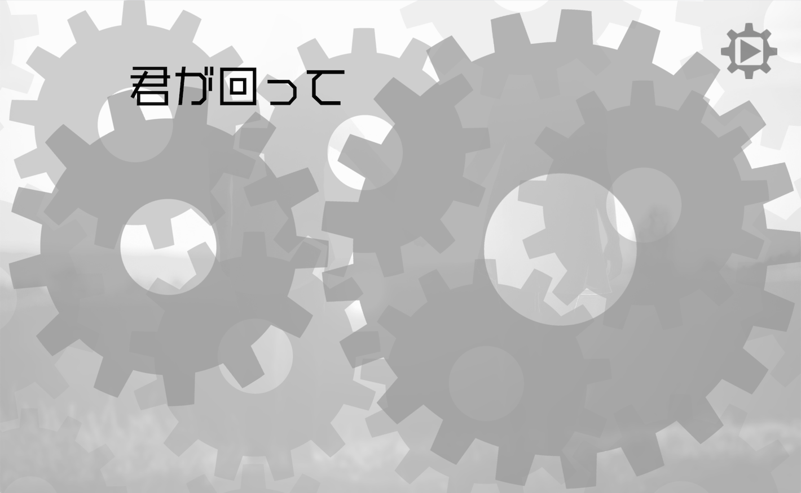
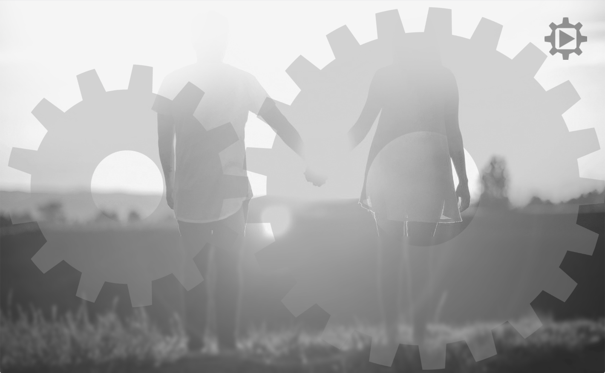

Gear Love
Web
Music
大学の学生主体による展覧会「卓展」の作品として制作。
遊びごころのある
Webサイトをテーマにした卓と音楽で世界観を作る卓を兼卓し、音楽×Webの作品を作りました。
-

- 
- 
-

使用ツール :
HTML,CSS,Javascript(jquery)
illustrator,Photoshop,Logic Pro X
制作期間 :
2019年 5月〜8月
リリックウェブサイトをコンセプトに、楽曲の世界観をサウンドに加え、歌詞をwebによるビジュアルからも表現しました。
webを活かしたインタラクティブ要素によりUXによる遊びごころを体験できます。
ユーザーによるスクロールで左右の大きさが異なる歯車が噛み合いながら回転しページが進んでいきます。
また曲に合わせた自動アニメーションも実装しました。